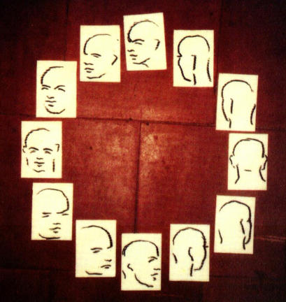
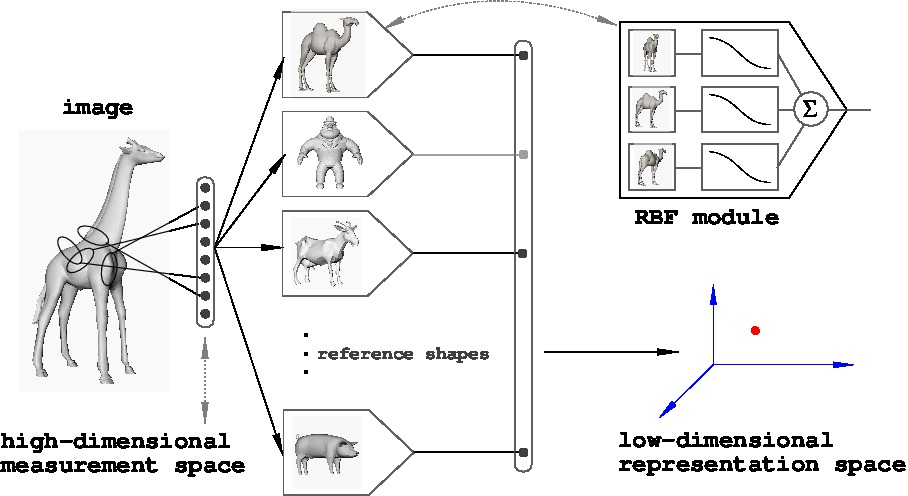

Week 5: universal tools, IV
Lecture 5.2: the representation of similarities; veridicality

Lecture 5.2: perceptual veridicality and its computational basis
")
- How neurons can be truthful
- Veridical representation: a computational definition
- Visualizing representational spaces with MDS (a refresher)
- Behavioral evidence for veridical perception of shape similarities
- Electrophysiological evidence for veridical representation of shape similarities
- Using fMRI to map the brain's shape representation space
on truth in perception
The natural appetite or taste of the human mind is for
truth; whether that truth results from the real agreement
or equality of original ideas among themselves; from the agreement
of the representation of any object with the thing represented; or
from the correspondence of the several parts of any arrangement with
each other.
Joshua Reynolds
Seven discourses on art
1776
on truth in perception
The natural appetite or taste of the human mind is for
truth; whether that truth results from the real agreement
or equality of original ideas among themselves; from the agreement
of the representation of any object with the thing represented; or
from the correspondence of the several parts of any arrangement with
each other.
Joshua Reynolds
Seven discourses on art
1776
How can a neural representation be truthful??
how neurons can be truthful

A group of neurons [remember, neurons don't work well alone] can be
truthful in representing some aspect of the world by
- selectively responding to world ("distal")
stimuli,
AND
- veridically representing distal relationships
(for instance, similarities among stimuli).
veridical representation of relationships: representation OF similarity

The perception of distal objects or events is
veridical, or truthful, with respect to
categorization if their similarity
relationships are captured by the distances among their
representations in the internal representation space.
This is what I call representation OF similarity (as
compared to representation BY similarity).
mapping the brain similarity space from behavioral data: the results

- Top left: seven computer-generated humanoid shapes used as
stimuli, arranged so as to make explicit their parametric similarity
relationships (think morphing).
- Top right: the star-shaped layout of the true
similarity space is revealed in this MDS map of one of the subjects'
response data. The fit between the true and
actual configurations is highly significant.
- Bottom left: the same analysis, applied to data from a study in
which subjects judged similarities among memorized shapes.
- Bottom right: a computer model replicates perfectly the pattern of
human performance.
veridicality of neural representation space in the monkey (Op de Beeck et al., 2001): the stimuli
Right: three configurations of shapes in a 2D shape
space, generated by morphing the shapes along two
independent dimensions.
H. Op de Beeck, J. Wagemans, and R. Vogels, Inferotemporal
neurons represent low-dimensional configurations of
parameterized shapes, Nature Neuroscience 4:1244-1252
(2001).
first, behavioral veridicality: stimuli configuration vs. human #1's behavioral data

first, behavioral veridicality: stimuli configuration vs. human #2's behavioral data

first, behavioral veridicality: stimuli configuration vs. MONKEY Y's behavioral data

first, behavioral veridicality: stimuli configuration vs. monkey E's behavioral data
finally, the veridicality of NEURAL REPRESENTATION SPACE, in the monkey

Right: The square arrangement of eight stimuli in a
parameter space is reflected in the layout of the eight
corresponding points recovered by MDS from inter-stimulus
distances, as measured in the image space (squares) and in a
124-neuron ensemble response space (diamonds).
Below: a typical neuron's response. Note the broad,
graded tuning, with stimulus #6 being the most effective
(recall the concept of hyperacuity from Lecture 4.1; and the
stress on tuning from slide #5 in the present lecture).

visualizing the shape space in the human brain from fMRI data

representation and reality
")
The perceptual representation of certain aspects of the world in the
brain is veridical.
Veridicality is ill-defined for a single stimulus. When the brain
representation of a set of related stimuli is examined,
their similarity relationships are seen to be reflected in both
behavioral and neural activity data.
Computationally, this is made possible by broad, graded tuning
of neurons to select stimuli — as explained in the remaining
[mostly "EXTRA"] slides here.
To find out more about veridicality and what characteristics of
neural computation make it possible,
see Representation and Recognition in Vision,
S. Edelman, MIT Press, 1999.
in a nutshell: a computational basis for representation by OF similarity
If the world-to-brain mapping is smooth,
shape constancy and veridical
perception are possible:
- SHAPE CONSTANCY because view and shape spaces can then be
interpolated from examples (using function approximation).
- VERIDICAL PERCEPTION because a smooth world-to-representation
space mapping preserves local similarities.
EXTRA:
"A generic smooth and regular mapping \(F\) will
[...] support veridical
representation, if the aim is approximate and local preservation of
similarity ranks. [...] Intuitively, a
conformal mapping is locally
an isometry; a
quasiconformal mapping is locally
affine. Under such
a mapping, the ranks of distances between points are preserved
approximately, and on a small scale. Because any
diffeomorphism
restricted to a
compact subset of its domain is quasiconformal, any
smooth and regular mapping \(F\) will result in a representation that is
locally approximately veridical. In other words, similarities among
shapes that are close to each other in the distal shape space will be
represented faithfully." (Edelman, 1999, p.108)
view spaces of objects are continuous and (mostly) smooth

view spaces AND shape spaces are continuous and (mostly) smooth
Illustrated here are three samples each from the view spaces of
a human (left) and Godzilla, as well as seven samples from the
human-Godzilla morph curve passing through their joint shape
space.
An implication of smoothness: if objects are represented by
examples (sample views), recognition reduces to FUNCTION
APPROXIMATION (interpolating view / shape spaces from examples).
[EXTRA] view and shape spaces: smooth manifolds embedded in the
measurement space
\(\require{color}\)
A shape space \({\color{red} s}\) for four-legged animal shapes, with two view
spaces \({\color{red} v}\) (for cow
and pig) perpendicular to it.
If the mapping from the world to the measurement space
\({\color{red} {\cal M}}\) is
smooth,
then:
— one could use regression (function approximation) to learn it from
examples;
— the representations in \({\color{red} {\cal M}}\) will be veridical
(truth-preserving) for similarity-based categorization
(Edelman, 1999).
[EXTRA] interpolation from examples for object recognition: a possible implementation
A natural approach to representing an example is a mechanism
that is TUNED to the example (for instance, to all views
of a particular object) — that is, responds selectively to that
example.
Illustration: the desired response of a mechanism that is tuned
to a cow shape to a series of cow views, as well as to views of
shapes that progressively differ from that of a cow.
[EXTRA] why view and shape spaces are SMOOTH?
IF (a) changes in object shape and viewing parameters "out there" in
the world, which need to be represented, are smooth, AND IF (b) the
world-to-representation mapping is smooth, THEN the represented view
and shape spaces will be smooth too (and learnable from examples by
function approximation).
Here are the components of the world-to-representation mapping:
\(f_1\) — image formation;
\(f_2\) — measurement;
\(f_3\) — dimensionality reduction.
It is easy to see that \(f_1\) is generically smooth; and it is
easy to ensure that \(f_2\) is, too (hint: use graded tuned
units). What about \(f_3\)?
[EXTRA] dimensionality reduction is critically important
A reminder why \(f_3\) — dimensionality reduction — is needed: to
avoid
the curse of dimensionality...
Learning directly in a high-dimensional representation space is
intractable, because it requires a number of examples that grows
exponentially with the number of dimensions.
[EXTRA] implementing a smooth \(f_3\) with a Chorus of Prototypes

A potential solution to the need for smooth dimensionality reduction: the Chorus Transform.
The Chorus Transform of a point \(\textbf{x}\) (here, giraffe) is related to what the middle layer of an
RBF network computes. It is defined as the vector of
distances between \(\textbf{x}\) and the RBF
"centers" or landmarks \(\textbf{p}_i\) (here, pig, camel, goat):
$$
CT({\bf x}) = \left( \begin{array}{c}
\| {\bf x} - {\bf p}_1 \| \\ \vdots \\ \| {\bf x} - {\bf p}_{n} \|
\end{array} \right)
$$
The application of the norm function \(\|\cdot\|\) to each difference vector \({\bf
x} - {\bf p}_i\) yields its length and therefore the distance between \({\bf x}\) and \({\bf
p}_i\).
[EXTRA] Chorus of Prototypes: an implemented computer vision system (Duvdevani-Bar & Edelman, 1999)
The response of a system trained on images of 10 objects to 8 new
test objects —
Note that the representation space spanned by this system's
responses is 10-dimensional.
[EXTRA] smooth dimensionality reduction with a Chorus of Prototypes

The Chorus Transform of a point in a \(D\)-dimensional space \(\textbf{x}\in R^{D}\) — the vector of distances
between it and the landmarks \(\textbf{p}_i\) — performs dimensionality
reduction from \(dim(\textbf{x}) = D\) to a potentially much smaller \(n \ll D\):
$$
CT({\bf x}) = \left( \begin{array}{c}
\| {\bf x} - {\bf p}_1 \| \\ \vdots \\ \| {\bf x} - {\bf p}_{n} \|
\end{array} \right)
$$
In other words, it maps points in a \(D\)-dimensional input space to
points in a space whose dimensionality \(n\) is the same as the number of
landmarks.
Note that \(CT\) is smooth in the requisite sense, and
therefore the reduced-dimensionality representations it forms
will be veridical (true) to those in the original space.
There is a deep and interesting link here to kernel methods in machine learning, which are beyond the
scope of this course.
[EXTRA] dimensionality reduction with a Chorus of Prototypes: the mathematical principles

According to the Johnson-Lindenstrauss Lemma (1984), a cloud of points in a
high-dimensional space can be projected onto a space of a VERY much lower
(logarithmically lower) dimensionality, while largely preserving the
relative distances among points.*
Relying on a related idea, Edelman (1999, App.B) showed that the Chorus Transform can
support a logarithmic dimensionality reduction, while approximately
preserving the relative distances among points (based on a
theorem due to Bourgain, 1985).
In other words, even with a very small number of landmarks — on the order
of \(\log
D\), where \(D\) is the dimensionality of the original problem — the layout
of the data points in the new, low-dimensional space
approximates their original layout, implying that the original similarity
relations, and with them category boundaries, etc., are largely
preserved.
*Specifically, any \(n\)-point subset of Euclidean space can be
embedded in \(O(\epsilon^{−2} \log n)\) dimensions with at most \((1 +
\epsilon)\) distortion of the inter-point distances.
[EXTRA] dimensionality reduction by CT: a numerical assessment
Preservation of distance ranks by the dimensionality-reducing Chorus
Transform, \(CT\).
The plot
shows Pearson product-moment correlation (dashed line) and Spearman rank
correlation (solid line) between the original and the \(CT\)-transformed
distances among 25 points in a space of dimensionality 1000, plotted
against the number of landmarks ("prototypes") employed by \(CT\). Error bars represent
the mean standard error of the mean, calculated over 10 runs.
[EXTRA] dimensionality reduction by CT (cont.)
A comparison between the dimensionality-reducing property
of \(CT\) and the prediction of the Johnson-Lindenstrauss (1984)
embedding theorem. The quality of the embedding was examined for
varying values of the distance distortion index \(0 <
\epsilon \le 1\).
The high Pearson and Spearman correlation between the
original and \(CT\)-transformed pairwise distances among 100 points
(picked at random from the unit hypercube in \(R^{10000}\)) indicates
how well the distances are preserved. For example, a distortion
of \(\epsilon = 1\), which allows an embedding into 5 dimensions,
results in Pearson and Spearman correlations of 0.9316
and 0.9460, respectively.
[EXTRA] dimensionality reduction by CT (cont.)
The dimensionality reduction for a set of \(n=100\) points, afforded by the
various values of \(\epsilon\).
The theoretical prediction is
\(O\left(\frac{\log n}{\epsilon^2}\right)\).
a computational model of visual shape representation
Top: the layout of nine parametrically controlled stimulus shapes in a shape
space.
Bottom left: the layout of the stimuli recovered by MDS from human
response data.
Bottom right: the layout of the stimuli recovered by MDS from the
responses of a model, based on "neurons" tuned to four landmark
(prototype) shapes.
NOTE: this model explains VERIDICAL, LOW-DIMENSIONAL REPRESENTATION;
it can be used in a variety of tasks, of which recognition is just one.
F. Cutzu and S. Edelman. Faithful representation of similarities
among three-dimensional shapes in human vision. Proceedings of
the National Academy of Science, 93:12046–12050, 1996.